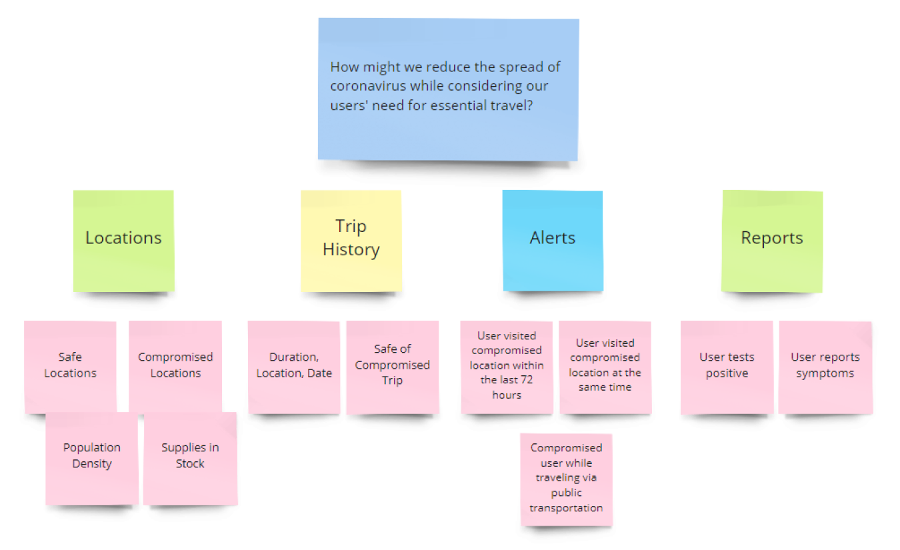
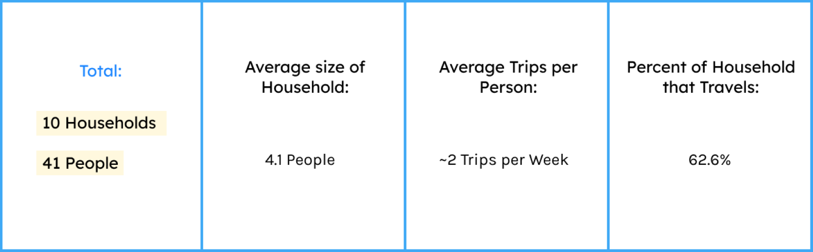
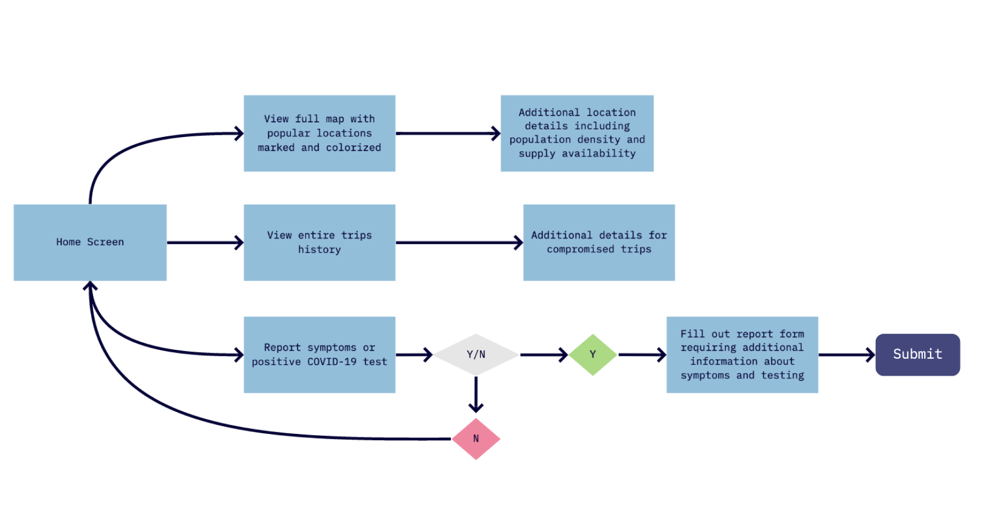
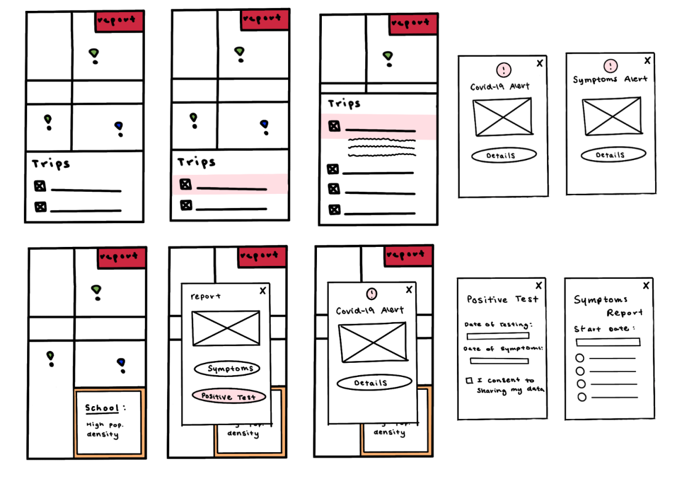
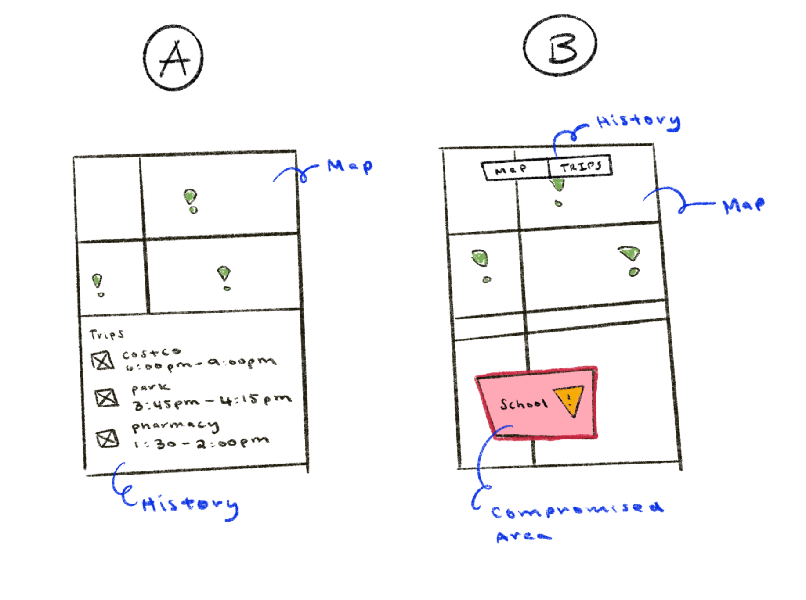
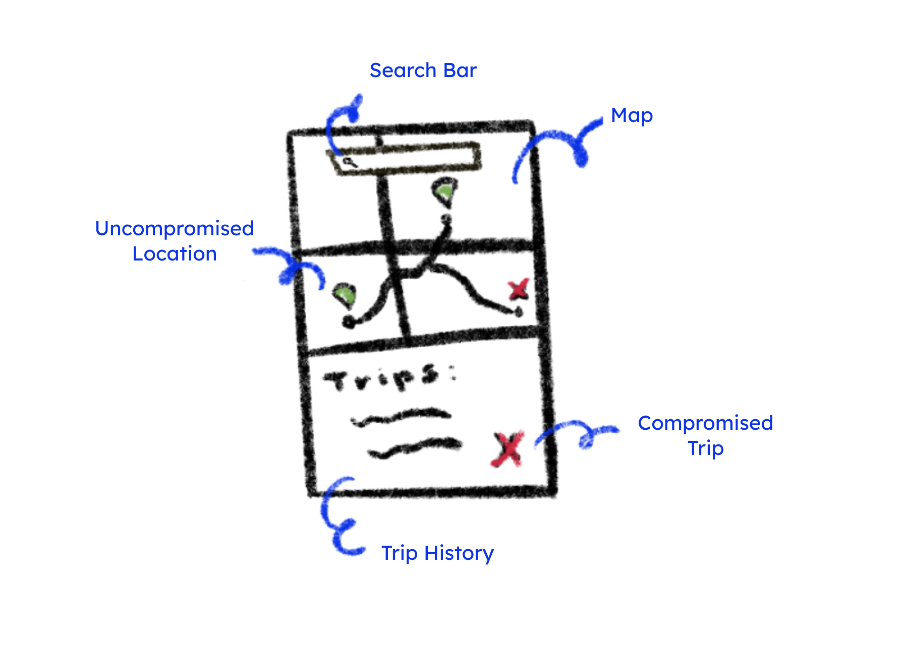
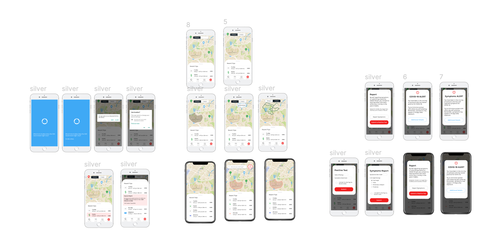
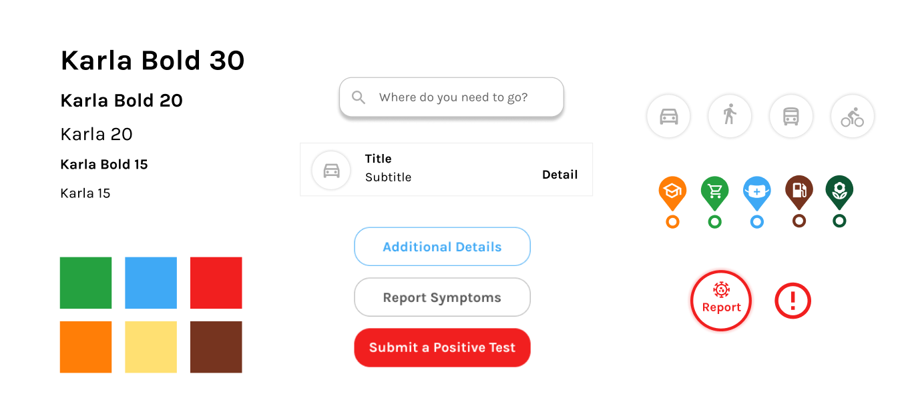

Overview
Background
This year, the COVID-19 pandemic has changed the way we interact with our communities. Although the CDC recommends isolation and social distancing to prevent the spread of coronavirus, many people have the essential need for traveling. Our project aims to reduce the growth rate of coronavirus within our communities by providing people with a platform for their essential travel needs.
Coronavirus has a 2 week long asymptomatic period where an infected person does not experience any symptoms of the virus but can still infect others. Additionally, the virus can last up to 72 hours on surfaces meaning people can still be infected even if they were not in direct contact with a carrier.
The Challenge:

Our Solution
A mobile app that provides users with a platform for essential travel while using contact tracing to track the spread of coronavirus. NOVID-19 uses bluetooth and location settings to calculate the population density based on the number of devices nearby. With this technology, users can also see how many other users they come into contact with and if they are at risk for coronavirus.
UX Research
We chose to conduct surveys and user interviews to gain a better understanding of essential travel needs within different households. During this process we confirmed the real need for essential businesses including grocery stores and pharmacies to remain open but also noticed a trend in other public areas including parks and schools.
We interviewed one member from 10 unique households which totaled to 41 people represented. These people differed in location, age, and socioeconomic status. Through our user research we aimed to gain a better understanding of many different types of households and the essential travel needs that each one has.

We can further breakdown this data by the average household size of 4.1 people. The average amount of trips taken per person being 2 times per week. We defined a trip as an instance where an individual leaves their living space to travel to a public area. The percentage of a household that travels is 62.6%.
Going beyond the numbers, we really wanted to understand and empathize with our users by asking ourselves, “Who are we designing for?” Keeping our focus on the many different users and the unique journeys they need to take, we created a household persona for an assortment of different users.

Through this research, I identified pain points and narrowed down the specific needs of many diverse users. By creating a user journey of many types of users essential travel needs, we were able to identify many pain points. We discovered that although most users had a safe way of transportation, some users did not and had to rely on public transportation or walking. Additionally, once they arrived at their destination, there may be more people than expected and our user may feel unsafe. Having the knowledge about how densely populated a certain place is at a certain time would greatly help users make an informed decision about their essential travel. For example, if they had known that the grocery store was packed on the Saturday, they might decide to go on Monday.
User Needs:
-
Safe method of travel: public transportation/walking
-
Available essential businesses goods (ex. Groceries, medical supplies)
- Knowledge about compromised public spaces (ex. Schools, parks, essential businesses)
User Flow
I created a preliminary user flow of our app based on multiple pain points that users experienced during their journeys. First, we established the need for a home screen similar to those of navigation apps. We envisioned this home screen to contain a map with crucial information in addition to a users trip history. From this home screen, users can access more of their trip history, a full view of the map, and also report symptoms or a positive test. We wanted to make these three main features very easily accessible for users since they would be the most helpful in providing users with a safe travel experience. From there, have the ability to access the details of a map location or their trip history. If a past trip becomes compromised, users will be alerted immediately upon opening the app.
Low Fidelity Prototypes
For our initial prototypes, I explored the home screen. Keeping in mind the user flow, I iterated on how the map and trip history was displayed. I wanted to keep it consistent but also noticeable when a trip became compromised. Therefore, you will see many iterations for a compromise trip and how we alert users. The second row of the low fidelity prototypes iterate through the journey a user goes through while reporting symptoms or a potential test.

A/B Testing
I gathered user feedback on how they would like to view their previous trip history. The first iteration A shows the trip history underneath the map with the option for the user to scroll up and expand the history or scroll down and view the entire map. This is similar to how many navigation and ride share apps display the maps and previous trips. The second iteration B shows a full map view and trip history as their own screens entirely. Therefore, in order for users to see their previous travels, they would have to tap a switch to do so.
Final Lo-Fi Prototype
The results of our A/B Testing concluded that option A was the better choice. Users enjoyed being able to see both the maps and their past trips at initial glance. Option A also allows for users to quickly identify a compromised trip.
More Iterations
After sketching out low fidelity prototypes I started translating the designs to high fidelity prototypes on Figma. I continued to iterate through these designs based on feedback I gathered from my teammates before creating the final prototypes.
High Fidelity Prototypes
The risks of essential traveling are reduced when users are informed prior, during, and after their trips. Prior to their trip, users can see which areas have a high population density at any given moment. Additionally, users can also see which stores are open and non compromised at the moment. During and after their trip they will be alerted if someone submits a report of a potential case.


Style Guide
I wanted to create visuals that were accessible and easy to understand. In additional to bold colors, I also included symbols so users who were visually impaired could quickly differentiate the different icons. For buttons and labels, I created them to be as simple and straightforward as possible.
Reflection + Next Steps
There is never a wrong time to ask for feedback and iterate. I made many iterations during this process at many different points. As a hackathon project, there was not a concrete timeline that I had to follow during my design process. I had a lot of fun and learned a lot through each iteration. As for next steps, I would love to do a heuristic evaluation and user testing for any slips or mistakes.